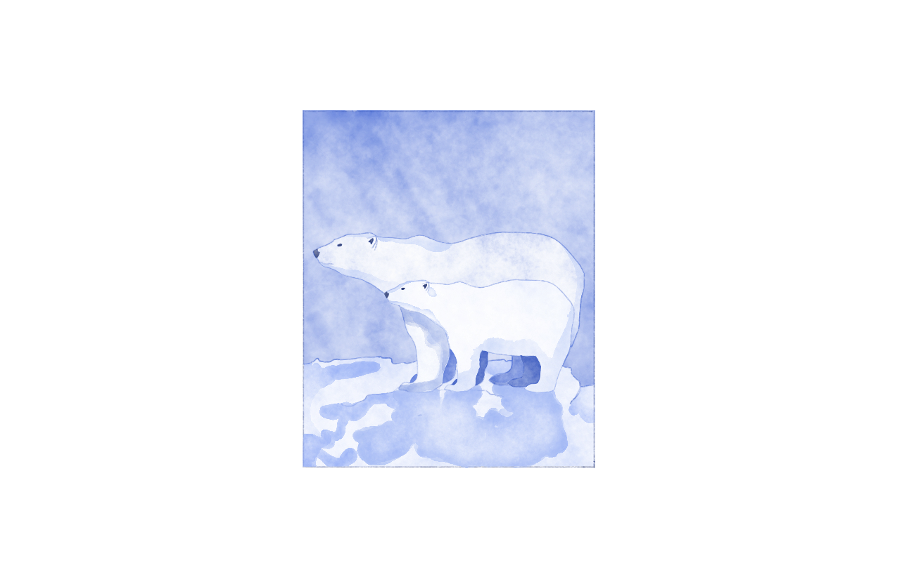

In the heart of the Arctic, nestled between snow-capped mountains and glistening glaciers, lies a community that has thrived for generations. Here, the Inuit people have forged a unique way of life, living in harmony with the land and sea.

However, a distant landscape of towering skyscrapers pierce the skyline, their glass facades reflecting the streets below. The city buzz with the sounds of traffic, as people hurry to and fro, disconnected from the natural world that once surrounded them.
In the distance, plumes of smoke billow from factories, their chimneys emitting the byproducts of fossil fuel production. The air is thick with the acrid scent of industrial waste, a stark contrast to the pristine environment of the Arctic community. The relentless pursuit of progress has come at a cost, as the once-vibrant ecosystem is slowly choked by the demands of a rapidly industrializing world.
In a world driven by relentless consumerism, workers move with practice precision as they assemble one item after another in an endless cycle. Mountains of unsold goods gather dust - an indication of the waste caused by mass production.
High in the mountains, the once-verdant forests have been stripped to a patchwork of stumps upon the earth. Deforestation has claimed countless trees, leaving behind a scarred and barren landscape. The impact is felt far beyond whats tangible, as the delicate balance of the ecosystem deteriorates.
The air is thick with the acrid scent of exhaust, and the constant hum of engines drown out the sounds of life.
Yet, despite all this meida coverage and the continual warming of the earth, the world remains ignorant.
I want the new iphone!
Me too!!
In a materiality-driven and consumerist world, where value is often equated with possessions and status symbols, the pursuit of endless consumption eclipses the urgency of environmental decline.
One day, the lab's early warning systems began blaring, alerting the scientists and analysts to an unprecedented storm system rapidly intensifying over the Arctic. Satellite imagery and weather models showed the storm growing in size and strength at an alarming rate, with the potential to unleash devastation across the fragile northern region.
Despite the lab's dire warnings, the majority of scientists and analysts remained dismissive, unwilling to disrupt their research and schedules over what they deemed to be typical Arctic weather volatility. However, one of the analysts refused to simply brush off the alarms.
In a race against time, they hurry to warn the people of the Arctic before it's too late...
The once familiar landscape now appeared foreign and unsettling, its landmarks and boundaries blurred beyond recognition.
After a harrowing journey through the deteriorating environment, the analyst finally reached a remote Arctic community, where he sought out an elder named Noah.
Noah observed the newcomer and questioned the reason of their arrival.
They've come to relay a message, telling him it's crucial that he understands the danger that's coming.
As Noah unfurled the scroll, the gravity of the situation hung heavy in the air.
Noah gathered his family to discuss the alarming message delivered by the outsider. At first, they were skeptical, having weathered many Arctic storms over the years.
However, as the family looked around at the thinning ice and rising waters lapping at the edges of their home, a troubling realization began to dawn on them. Perhaps this storm was unlike any they had faced before.

Noah and his family decided to building the ark upon the soon arrival of the great storm.
Day after day, the ark began to take shape as the looming storm gradually hovered above the Arctic.
Countless days had passed and the ark was nearly complete.
With a day remaining, the ark was ready and Noah brought upon his family, food and the animals just like the message had told him.
Soon after, rain poured relentlessly for forty consecutive days and nights, submerging the Arctic under water while Noah, his family, and the animals patiently waited for the storm to subside.
.png)
The storm raged on, battering the Arctic with winds and waves that seem to defy the very laws of nature. For months, the ark is tossed about, its dwellers clinging to hope as they weather the relentless onslaught.
The storm subsides and the water slowly recedes but with no sign of the Arctic in sight. Displaced and disoriented, the displaced Arctic community must now grapple with the harsh realities of their situation - the need to find new sources of food and shelter, the loss of their cultural touchstones, and the daunting prospect of rebuilding their lives from scratch.
The notion of uninterrupted progress often obscures the reality that human history is filled with unexpected events that can drastically change the course of societies. Catastrophic occurrences have the power to abruptly end periods of relative stability and prosperity, compelling humanity to adapt and reinvent itself in the face of adversity. These unpredictable phenomena, which can emerge rapidly and have far-reaching consequences, are an intrinsic part of the complex and interconnected global landscape we inhabit today.